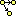

This operator may be applied to any nondeterministic FA. At the end of the operation, there will be a completed NFA.
The conversion practice used is the standard canonical method of creating an equivalent DFA from an NFA, that is: each state in the DFA being built corresponds to a nonempty set of states in the original NFA. Therefore, for an NFA with n states, there are potentially 2n - 1 states in the DFA, though realistically this upper bound is rarely met.
The interface for the creating a DFA from an NFA is shown above. The NFA is displayed for reference purposes in the left portion of the view. The DFA is created in the right portion of the view; in the example given, the conversion is complete and correct. The set of NFA states in shown in the label below each DFA state. Between the two diagrams for the two automatons is a bar that may be dragged left and right to adjust the allocation of sizes between the two diagrams.
The first thing that happens is that the initial state is created. The initial state's set for the DFA consists of the initial set of the NFA, and the closure of all states reachable from that initial state on lambda transitions. This is done for the user: the only thing the user sees at first in the DFA constructor is this one initial state. In the example above, the initial NFA state is q0 and there are no lambda transitions from it, so the initial set is only 0.
One then uses the "Expand Group on Terminal" tool ( ) to build the DFA. When this tool is active, one drags from a state (or group) into empty space.
) to build the DFA. When this tool is active, one drags from a state (or group) into empty space.

The user is then queried as to what symbol to expand this group on, shown above. For example, for the initial set of q0, one can expand on 1 since there are transitions from that state in the original NFA.

Assuming that the original set of states actually expands on the input terminal, the user is then queried above the set of NFA states that group expands to on that terminal. In our running example, from the diagram we see that q0 expands on 1 to the states q0, q1 and q2. While q0 and q1 are fairly obvious, less obvious is the presence of q2. However, since there is a lambda transition from q1 to q2, the closure of q1 implies q2.
One would therefore enter 0 1 2 into the dialog shown above, as shown. (JFLAP would also accept q0 q1 q2, or 0,1,2, or q0, q1, q2, etc etc.)
When the user enters the set of states, and it is correct, the new DFA state is created at the point in empty space where the user originally dragged to. (If the user is incorrect, the user is gently chastised and nothing is added.)
Final states in the DFA are those states whose NFA state sets contain at least one final state from the NFA: in the example, notice that every state in the DFA with the NFA final state q3 in its set is a final state. JFLAP will detect if the user entered any states that were final states, and if so make the state it creates a final state.
The "Done?" button will check the DFA to see if it is complete. If it is, then this completed DFA will be exported to its own window, where it may be treated like any other FA.
While it is possible for one to build the DFA entirely through use of the "Expand Group on Terminal" tool ( ), one also has the option of letting JFLAP do some or all of the work.
), one also has the option of letting JFLAP do some or all of the work.
The "State Expander" tool () is a moderate help tool. When active, if you click on a state, it will expand that group on all terminals to all other groups it goes to. Any newly created states will be randomly placed.
The "Complete" button will complete the DFA entirely.
The NFA to DFA procedure depends on having transitions with at most one character. As JFLAP allows multiple character transitions, all of these are automatically broken up: the transition abc would be broken into three transitions, with two new bridge states created.
Additionally, when expanding a set of states, if the destination set of states is already in the DFA, instead of dragging to empty space, one may drag to that second set of states, and the user will not be queried as to the set of states it goes to. It is considered that the user has already made that choice. However, if the user does drag to empty space and input a set that already exists, then a new state will not be created; it clearly does not do to have multiple identical sets.